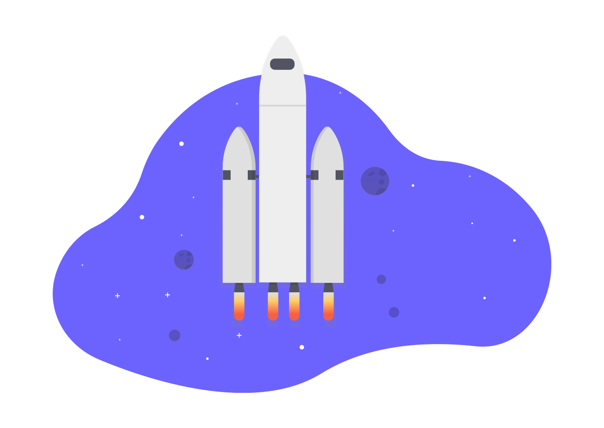

<ion-content>
  <div style="text-align: center; margin-top: 20%">
    <ion-text mode="ios">
      <ion-spinner name="crescent"></ion-spinner> <h4>Vous n'êtes pas connecté</h4>
    </ion-text>
    <div style="margin-top: 100px;">
      
    </div>
  </div>

</ion-content>
